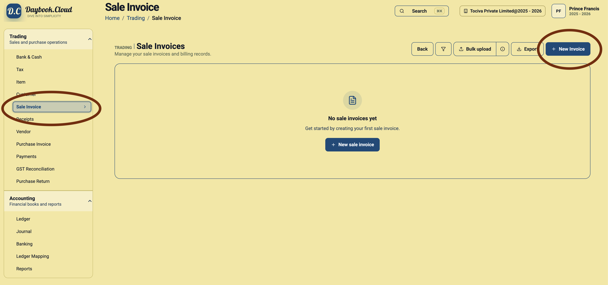
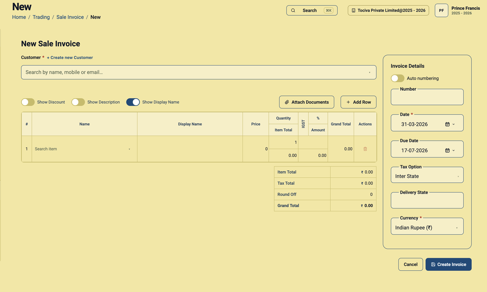
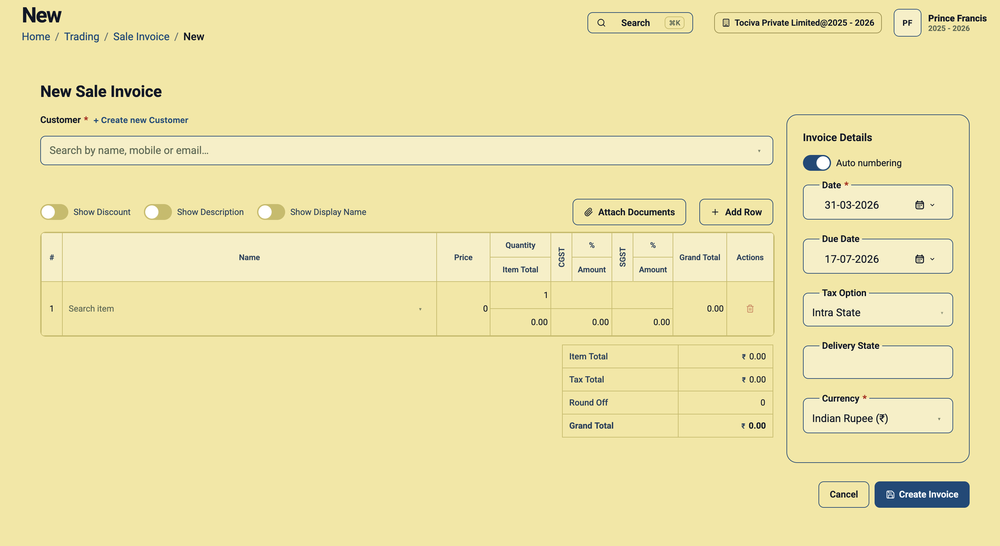
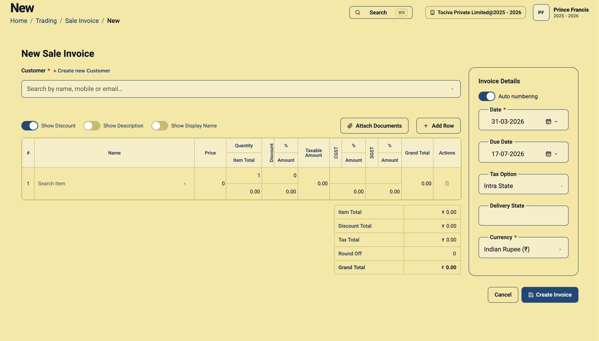

A sale invoice records what you supplied to a customer, how much the customer owes, which taxes apply, when payment is due, and the currency in which payment is expected. Daybook.Cloud brings these decisions into one invoice form so local and international sales can follow the same controlled workflow.
Foreign-currency invoicing is especially important. If a customer agreed to pay in US Dollars, Euros, Pounds Sterling, or another currency, the invoice must be created in that transaction currency—not simply in your company’s home currency. The currency symbol, item prices, tax amounts, and grand total should all be reviewed in the selected invoice currency before the invoice is created.
What you can control on a sale invoice
- Customer: Search for an existing customer or create a new one without leaving the workflow.
- Billing and shipping addresses: Review the addresses loaded for the selected customer and change either address when this sale uses a different location.
- Invoice number: Use automatic numbering for a consistent sequence or turn it off to enter an approved number manually.
- Invoice and due dates: Record when the invoice is issued and when payment becomes due.
- Tax option: Choose the correct treatment for an intra-state, inter-state, export, or non-taxable transaction, according to your configured tax groups.
- Delivery state: Enter the place-of-supply or delivery state used by your tax process.
- Currency: Create the invoice in the customer’s agreed transaction currency.
- Line-item detail: Add items, quantities, prices, optional discounts, descriptions, display names, and additional rows.
- Supporting files: Attach purchase orders, contracts, delivery records, or other relevant documents.
Before you create the invoice
Collect the following information first. A short review at this stage prevents the most expensive invoice corrections later.
- The correct legal customer record and billing contact.
- The customer’s billing address and the actual shipping or delivery address.
- The purchase order, contract, or customer reference, if applicable.
- The agreed invoice currency and item prices in that currency.
- The supply date, invoice date, payment terms, and due date.
- The correct tax option and delivery state.
- Products or services, quantities, rates, discounts, and descriptions.
- Any supporting documents that should remain with the transaction.
If you are invoicing a foreign customer for the first time, confirm the customer’s country and currency in the customer record before starting. See the customer creation and multi-currency guide for that setup.
Step 1: Open Sale Invoice and start a new invoice
Go to Trading in the left navigation and select Sale Invoice. The Sale Invoices page contains your invoice list and invoice actions. Click New Invoice at the top right. If the company has no sale invoices yet, you can also click New sale invoice in the centre of the page.

Step 2: Select the customer
Use the Customer search field to find the customer by name, mobile number, or email address. Select the exact customer record that should appear on the invoice. If the customer does not exist, click Create new Customer, add the customer details, and then return to the invoice.
Do not select a similarly named customer without checking the identity, tax registration, country, and currency. The selected customer provides essential billing context for the transaction.
Step 3: Review or change the billing and shipping addresses
After selecting the customer, review the address information used for the invoice. The billing address identifies where the invoice is addressed; the shipping address identifies where goods or services are delivered. They can be the same, but they do not have to be.
- Use the registered or accounts-payable location as the billing address when required by the customer.
- Use the branch, warehouse, project site, or other actual destination as the shipping address.
- If this transaction uses a different saved address, change the selected billing or shipping address before creating the invoice.
- If the required address is missing or incorrect, update the customer’s address details first, then reselect the correct address on the invoice.
- Recheck the delivery state after changing the shipping address because it can affect the tax option.
This review is important for both domestic GST treatment and exports. An invoice can contain the right customer name but still be wrong if it uses the wrong branch, state, country, or delivery destination.
Step 4: Choose automatic or manual invoice numbering
The Auto numbering switch appears in Invoice Details. Keep it enabled when Daybook.Cloud should assign the next number in your configured sequence. This is the preferred everyday workflow because it reduces duplicate numbers and keeps the series consistent.
Turn Auto numbering off only when your process requires a specific invoice number, such as during an approved migration or when continuing an existing sequence. A Number field then appears so you can enter the value manually.

Before using a manual number, verify that it is unique and follows your company’s numbering and statutory requirements. Do not change numbering merely to make an invoice easier to recognise; use customer references, descriptions, or attachments for additional context.
Step 5: Set the invoice date and due date
Select the required Date and Due Date in the Invoice Details panel.
- Date: The issue date of the sale invoice.
- Due Date: The deadline by which the customer should pay.
The due date should reflect the agreed payment terms—for example, immediate payment, 15 days, 30 days, or a contract-specific date. Review both dates carefully when entering a historical transaction or preparing an invoice in advance.
Step 6: Select the correct tax option
The Tax Option determines which configured tax-group mode is used for the invoice. The correct choice depends on the supplier location, place of supply, customer details, and nature of the transaction. Tax treatment should be confirmed with your accountant or tax adviser.
Intra State
Choose Intra State when the transaction should use the intra-state mode. For a typical Indian GST configuration, an 18% tax group may apply CGST 9% plus SGST 9%. The item table exposes separate CGST and SGST columns so you can review the split and amounts.

Inter State
Choose Inter State when the transaction should use the inter-state mode. With a typical Indian GST setup, the configured tax group applies IGST rather than a CGST and SGST split. Notice how the item table changes to show the tax columns relevant to the selected option.
Export or other configured tax modes
For an international sale, use the export mode or other tax treatment configured for your business. An export may be zero-rated or may require another treatment based on your registration, documentation, and applicable law. Selecting a foreign currency does not automatically decide the tax treatment; currency and tax option are separate controls.
Non-taxable transactions
Use a non-taxable mode only when the supply is genuinely treated that way and your tax configuration supports it. A 0% tax, an export, and a non-taxable supply can have different accounting or reporting meanings even if each produces no tax amount on the invoice.
If the required option does not apply the expected taxes, review your individual taxes and tax-group mappings before creating the invoice. The tax configuration guide and tax groups guide explain that setup.
Step 7: Enter the delivery state
Use Delivery State to record the destination or place-of-supply state required by your process. Compare it with the shipping address and selected tax option. If the delivery state changes, reassess whether the invoice should be Intra State or Inter State before proceeding.
Step 8: Select the invoice currency—especially for foreign customers
The Currency field is a required invoice control. Indian Rupee (₹) may be displayed by default, but it should not be accepted automatically for every customer. Open the currency list and select the currency agreed with the customer.
Why the invoice currency matters
- Every item price is interpreted in the selected currency.
- Discounts, taxable amounts, tax amounts, round-off, and the grand total are presented in that currency.
- The customer can match the invoice to the contract, purchase order, and expected payment currency.
- Your finance team can distinguish the transaction currency from the company’s home or reporting currency.
Foreign-currency example
Assume an Indian company invoices a US customer for consulting services:
- Customer: Select the US customer record.
- Currency: Select US Dollar (USD) if the contract is priced in USD.
- Price: Enter the agreed dollar rate—such as 1,500.00 USD—not an INR conversion.
- Tax option: Select the export or other approved tax mode separately.
- Addresses: Verify the international billing and shipping addresses, including country and postal code.
- Review: Confirm that the totals display the intended currency before clicking Create Invoice.
Foreign-currency control checklist
- Use the currency stated in the signed contract or purchase order.
- Do not type converted home-currency prices into an invoice set to a foreign currency.
- Do not assume the customer’s country always determines the billing currency; use the commercial agreement.
- Confirm how exchange rates and local-currency accounting are handled in your finance process.
- Keep evidence of the agreed currency and pricing as an attachment when useful.
- Check the currency symbol and grand total during final review.
Step 9: Add products or services
In the first row, click Search item and choose the product or service being sold. Enter the quantity and price, then review the calculated item total and taxes. Click Add Row for every additional item.
Use Show Display Name when the customer-facing name should differ from the internal item name. This adds a Display Name column to the invoice table. Use Show Description when line-level detail, scope, period, specification, or delivery information should accompany an item.
Step 10: Apply discounts carefully
Enable Show Discount to add discount fields to the item table. The table then shows the discount percentage, discount amount, taxable amount, and updated totals.

Confirm whether the commercial agreement expresses the discount as a percentage or a fixed value, then review the taxable amount after the discount. The invoice summary adds a Discount Total when discounting is enabled.
Step 11: Attach supporting documents
Click Attach Documents to keep relevant evidence with the invoice. Depending on your workflow, useful documents can include:
- Customer purchase order or work order.
- Signed quotation, contract, or statement of work.
- Delivery note, timesheet, acceptance record, or milestone approval.
- Foreign-currency pricing confirmation or another supporting reference.
Attach only appropriate business documents and avoid unnecessary personal or confidential information.
Step 12: Review the invoice totals
Before creating the invoice, reconcile the line items with the summary:
- Item Total: Total before the displayed discount and taxes.
- Discount Total: Combined discount when discounts are enabled.
- Tax Total: Combined tax calculated from the selected tax mode and item tax groups.
- Round Off: Any rounding adjustment.
- Grand Total: The final amount the customer owes in the selected invoice currency.
For a foreign-currency invoice, pause at the Grand Total and confirm the currency one final time. A numerically correct total in the wrong currency is still a materially incorrect invoice.
Step 13: Create the invoice
Click Create Invoice only after completing the final review. If information is incomplete or you are not ready to proceed, click Cancel and correct the underlying customer, item, tax, or address setup first.
Final sale-invoice checklist
- The correct customer record is selected.
- Billing and shipping addresses match this transaction.
- The invoice number is automatic, or the manual number is authorised and unique.
- The invoice date and due date match the agreed terms.
- The tax option matches the transaction and delivery state.
- The required currency—not merely the default currency—is selected.
- Every price and discount is entered in the selected invoice currency.
- Items, quantities, display names, and descriptions are complete.
- Taxable amounts and tax columns look correct.
- Supporting documents are attached where needed.
- The Grand Total and currency symbol have been checked together.
Common mistakes to avoid
- Leaving INR selected for an overseas contract priced in USD or EUR.
- Converting prices to INR while the invoice is still set to USD.
- Choosing Inter State merely because the invoice uses a foreign currency. Tax option depends on tax treatment, not currency alone.
- Using the billing address as the shipping address without checking the actual destination.
- Changing the delivery state but forgetting to reassess the tax option.
- Turning off automatic numbering without checking for duplicate numbers.
- Creating the invoice before reviewing discounts, tax totals, and the final currency symbol.